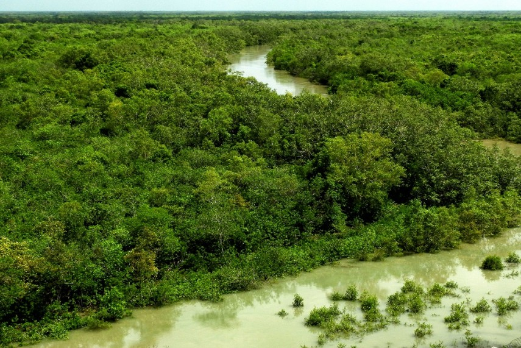

Asian Forests
About
Most tropical rainforest in Asia is found in Indonesia (on scattered islands), the Malay peninsula (Malaysia, Thailand, Myanmar), and Laos and Cambodia. Forest once covered a much greater area in Asia, but logging and clearing of forests for agriculture has destroyed much of the region's rainforests.
The forests of Asia and the Pacific together account for about one-fifth of the world's forests and cover around 26 percent of the land area in the region, or 734 million hectares.
1. Southeast Asian Rainforest
The forest is found in Asia, covering Indonesia, Laos, Cambodia, and the Malay Peninsula. It once covered even a greater area in Asia, but deforestation destroyed most regions of the rainforest. The forest is home to many rare birds, mammals, amphibians, and reptiles.

At one point, there were 200 different species of trees in a hectare, but deforestation has put those species in danger. One exciting feature of this rainforest is the dominance of one family of trees, with numerous species of animals, such as Bengal Tiger, Dawn bat, king cobra, and proboscis monkey, among others.
2.The Sundarbans
The world’s biggest mangrove forest, the Sundarbans encompasses around 38,000 square miles of land and water straddling the border of Bangladesh and northern India.
The forest is named after the sundari tree, the most populous in the area. The forest itself only constitutes about 40% of the area of the Sundarbans: Around 50% of it is water, and the rest is comprised of sand dunes and mudflats. The Sundarbans National Park was designated a UNESCO World Heritage Site in the late 1980s, and three wildlife sanctuaries set up in the Bangladesh part of the Sundarbans were honored in 1997. The entire area is considered a UNESCO Biosphere Reserve.